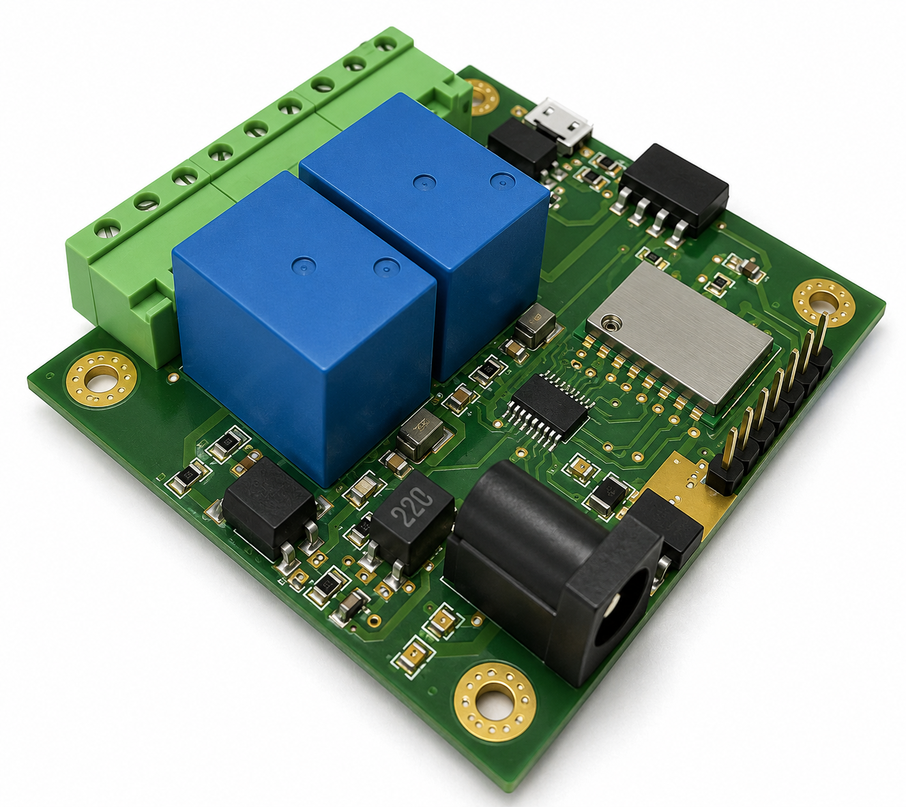

Hardware Design Engineer
Muhammad Taimoor Muzaffar
Electrical engineer with hands-on experience in end-to-end electronic hardware development: circuit design, PCB layout, prototyping, testing, and validation.

PCB Projects

Low-power wearable electronics
Wearable Golf Watch PCB
A compact, low-power wearable system built around the ESP32-S3 for outdoor readability and efficient battery operation. The design integrates USB programming and debugging, Li-ion charging and fuel gauging, buck-boost power conversion, an SPI memory LCD with front-light control, and a custom metal-dome keypad. The PCB was completed with system documentation, BOM preparation, DFM review, and assembly optimization for JLCPCB.
- Controller
- ESP32-S3
- Display
- SPI memory LCD
- Power
- Li-ion and buck-boost

High-density LED control
Rigid-Flex LED Controller
A high-density rigid-flex controller built around a 170 MHz STM32G474RET6 and TLE9251VSJ CAN transceiver to drive a 36-unit WS2815 LED matrix. Following prototype validation, the design was refined for EMC/EMI compliance and product certification, with more than 43 decoupling capacitors and molded tantalum bulk capacitors providing stable power delivery in a compact, flexible form factor.
- Controller
- STM32G474RET6
- Interface
- TLE9251VSJ CAN
- Output
- 36x WS2815 LEDs

Spatial magnetic sensing
3-Axis Magnetic Field Sensing Cube
A rigid sensing cube assembled from six identical castellated PCBs, each carrying an independent 3-axis magnetometer. All sensors share one I2C bus and are selected through an I2C multiplexer, providing reliable communication with minimal routing and interconnects.
- Structure
- 6 castellated PCBs
- Sensors
- 6x 3-axis magnetometer
- Interface
- Multiplexed I2C bus

Automotive power distribution
40A Fuse Box PCB
A 40A automotive fuse box PCB designed as a reliable, service-friendly replacement for an aging distribution unit in a vintage car. The drop-in design preserves the original mounting and connector alignment, uses robust copper for high-current paths, and provides clearly labeled circuits for lighting, accessories, safety systems, and spares.
- Current
- 40A
- Application
- Automotive distribution
- Fit
- Drop-in replacement

Miniature magnetic sensing
Ultra-Compact 3-Axis Magnetometer
An ultra-compact 1.9 × 9 mm magnetometer PCB integrating a 3-axis magnetic sensor, on-board voltage regulation, and an I2C interface. The layout is optimized for severe space constraints, signal integrity, and reliable manufacturing in miniature embedded systems.
- Size
- 1.9 × 9 mm
- Sensor
- 3-axis magnetometer
- Interface
- I2C

Audio hardware reconstruction
CPY-7 Audio AMP PCB Reverse Engineering
Reverse engineered an audio amplifier PCB to produce a fully functional replacement board. The work covered component identification, schematic reconstruction, BOM extraction, and mechanical and electrical layout reproduction, followed by validation testing to confirm form-fit-function compatibility with the original hardware.
- Scope
- Complete PCB reconstruction
- Deliverables
- Schematic, BOM, layout
- Validation
- Form, fit, and function

Contactless audio indication
Hall Effect Sensor Speaker
A compact speaker PCB that detects magnetic-field changes with a Hall-effect sensor and triggers immediate audio feedback or alerts. The board integrates power regulation, sensing, and audio-drive circuitry in a clean, manufacturable layout for contactless state detection with clear sound indication.
- Sensor
- Hall effect
- Output
- Audio alert
- Integration
- Regulation and audio drive

Legacy hardware reconstruction
NVG PCB Reverse Engineering
Reverse engineered a fully populated through-hole PCB without access to the original schematics or design files. The work covered component identification, net tracing, schematic reconstruction, and a complete PCB redesign while preserving the original electrical behavior, mechanical fit, and form factor.
- Assembly
- Through-hole
- Process
- Trace and reconstruct
- Constraint
- Original fit and function

Industrial motion sensing
Embedded Motion Sensor
An embedded motor-sensor node built around the LSM6DSV16X IMU and STM32G474 microcontroller for real-time motion data streaming. The board integrates a TLE9251 CAN interface with 120Ω termination, 5V-to-3.3V regulation, SWD programming pads, and robust connectivity for reliable field installation.
- Controller
- STM32G474
- Sensor
- LSM6DSV16X IMU
- Interface
- TLE9251 CAN

Power electronics
Dual-Output Switching Power Supply
A 6-layer dual-output switching power supply built around the ISL6236A dual buck controller. The layout uses optimized power and ground planes, tightly controlled high-current switching loops, and compact component placement to support efficient power delivery, signal integrity, and manufacturability.
- Controller
- ISL6236A
- Topology
- Dual buck converter
- Stackup
- 6-layer PCB

Wireless media control
Media Remote Controller PCB
A compact wireless media-control PCB built around the ESP32-C3. It combines dual tactile inputs, USB-C and Qi wireless charging, buck-boost 3.3V regulation, battery fuel-gauge monitoring, protection and ESD circuitry, and dedicated test points for reliable bring-up.
- Controller
- ESP32-C3
- Charging
- BQ24074 and BQ51013
- Power
- TPS63031 and MAX17048

Automotive motor control
Motor Driver Module
A custom ESP32-based motor driver PCB developed to modernize control systems in a vintage car. The board integrates three high-current motor driver stages, a buck-converter power section, and robust terminal interfaces for reliable, wireless, and programmable control while preserving the vehicle's classic hardware.
- Controller
- ESP32
- Outputs
- 3 motor channels
- Power
- On-board buck converter

High-speed flex interconnect
FPC Extension
A custom 60 mm FPC extension designed to relocate an embedded camera sensor cleanly within tight enclosures. The flex PCB routes MIPI CSI-2 high-speed lanes, clocks, power rails, and I2C control signals between two 30-pin, 0.4 mm-pitch connectors, using length-matched differential pairs and controlled impedance to maintain signal integrity.
- Length
- 60 mm
- Connectors
- 30-pin, 0.4 mm pitch
- Interface
- MIPI CSI-2 and I2C

Human-machine interface
Custom Rotary Encoder Module
A compact rotary encoder breakout PCB with a clean 5-pin interface (GND, V+, SW, DT, and CLK) for quick integration into embedded projects. The board combines a robust mechanical footprint with tidy encoder-channel routing and provisions for pull-up and debounce components to improve reliability during fast turns and button presses.
- Interface
- 5-pin header
- Signals
- SW, DT, CLK
- Conditioning
- Pull-up and debounce
/For%20Front.png)
Relay PCB reverse engineering
Dual-Relay Control PCB (Reverse Engineered)
Reverse engineered a 12V dual-relay control PCB by reconstructing its schematic, verifying the BOM and component footprints, and recreating the PCB layout to preserve the original functionality for manufacturing and technical documentation.
- Supply
- 12V
- Outputs
- 2 relay channels
- Scope
- Schematic and layout

Through-hole PCB reconstruction
PCB Reverse Engineering
Reverse engineered a through-hole PCB with an edge connector by tracing nets, identifying component values and footprints, and rebuilding the design as a clean, documented assembly. Deliverables included an updated schematic, BOM, PCB layout, and a complete 3D model used to validate mechanical fit and assembly before fabrication.
- Method
- Net tracing
- Assembly
- Through-hole
- Deliverables
- Schematic, BOM, layout

PCB reverse engineering
Panel PCB Reverse Engineered
Reverse engineered a long control and display PCB by mapping its connectors and I/O, rebuilding the schematic and netlist, and recreating the layout for manufacturing. The finished design includes clear silkscreen references, verified component footprints, and fabrication-ready top and bottom outputs while preserving the original form factor and mounting constraints.
- Scope
- Schematic and layout
- Validation
- Footprints and I/O
- Output
- Fabrication ready

Multi-node IoT platform
WeMos D1 Max - Quad ESP8266 Carrier Board
A custom carrier PCB designed to host four WeMos D1 Mini modules on a single board. It provides shared power, a reset switch, an on-board status LED, and neatly routed headers that break out each module's I/O pins. It is ideal for rapid IoT prototyping, parallel firmware testing, and compact multi-node Wi-Fi projects.
- Modules
- 4x WeMos D1 Mini
- Platform
- ESP8266 Wi-Fi
- Features
- Shared power and I/O

Status indication
LED Indicator Module
A compact 3-channel indicator PCB with red, yellow, and green LEDs and on-board current-limiting resistors. Its simple 4-pin interface (GND plus three signal lines) and four mounting holes make it easy to integrate into microcontroller projects for status indication, debugging, and rapid prototyping.
- Channels
- 3 LED outputs
- Interface
- 4-pin header
- LEDs
- Red, yellow, green

Relay control system
Master Relay Module
A master relay control PCB designed for organized multi-load switching and embedded control integration. The project includes the PCB design, schematic documentation, board layout, and enclosure design reference.
- Type
- Relay control PCB
- Focus
- Multi-load control
- Status
- Prototype

Arduino expansion board
Shield Board for Arduino
A custom Arduino shield board designed to extend standard Arduino hardware with a clean add-on PCB format. The board is built around simple integration, accessible headers, and fabrication-ready documentation.
- Type
- Arduino shield PCB
- Focus
- Expansion interface
- Status
- Fabrication ready

Relay control board
Dual Relay Module
A two-channel relay PCB designed to switch independent external loads from low-voltage control signals. The module keeps the control and load sides organized for easier wiring, testing, and embedded system integration.
- Type
- Dual relay PCB
- Focus
- Two-channel switching
- Status
- Prototype

Relay control board
Single Relay Module
A compact single-channel relay PCB for switching external loads from a low-voltage control signal. The design focuses on clear control and load separation, practical terminal access, and a simple layout for prototype use.
- Type
- Single relay PCB
- Focus
- Load switching
- Status
- Prototype

Microcontroller board
Smart MCU
A compact microcontroller-based PCB designed for embedded control, prototyping, and hardware integration. The board focuses on clean routing, practical I/O access, and a layout suitable for assembly and testing.
- Type
- MCU development PCB
- Focus
- Embedded control
- Status
- Prototype
Toolbox
Hardware, firmware, and lab workflow
EDA
PCB layout, schematic design, component libraries, manufacturability checks, and documentation.
Embedded
Embedded systems, sensor interfaces, MCU bring-up, test planning, and board-level validation.
Interfaces
I2C, SPI, UART, USB, sensor buses, power distribution, and mixed-signal routing.
Manufacturing
Gerbers, BOM, fabrication handoff, DFM checks, assembly notes, prototype testing.
Contact
Connect for hardware design work and collaboration.
Reach Muhammad Taimoor Muzaffar by email, LinkedIn, or GitHub.